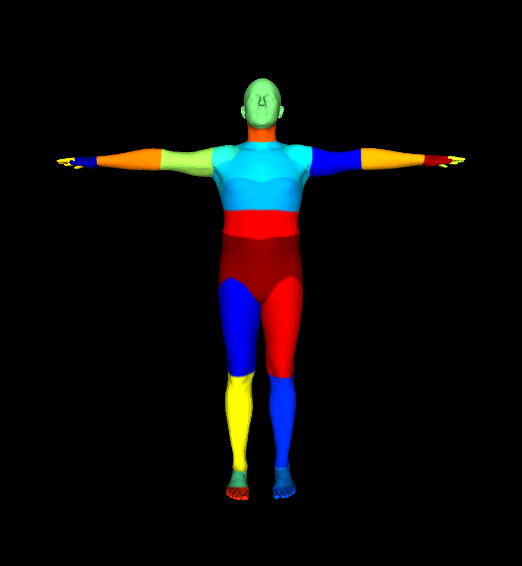

CSC2626 Imitation Learning for Robotics
Week 11: Learning from Videos
Learning to act from videos
• The argument: we have billions of videos on the internet, many of which show how humans interact with objects. Let’s try to use these videos to teach robots how to act. A tantalizing possibility for scaling up robot learning.
• Problem #1: Actions labels are missing!
• Problem #2: Morphology and mechanics of the human body are different than the robot’s
• Problem #3: The camera viewpoint during the recording of the video is likely different than the one during deployment.
What can we realistically learn from videos?
• Learn representations for pretraining policy backbones
• Learn video dynamics
• Extract actions from videos
• Learn affordances (how humans interact with objects)
Today’s agenda
- Extracting actions from videos
- Physics–based human motion estimation & prediction
- Hand motion estimation
- Motion retargeting to a robot
- Learning video dynamics
- Video predictive models
- Action spaces for learning from videos
- Learning object affordances from video
SMPL (Skinned Multi-Person Linear Model)

SMPL + Hands
Biomechanics models
• SMPL is a kinematic model of the human body
• For more accurate models we could try to model the muscle structure of the human body
Hand motion estimation in AR/VR headsets
Frame-by-frame human pose detectors
KAMA: 3D Keypoint Aware Body Mesh Articulation. Iqbal, Xie et al. 3DV 2021. https://arxiv.org/abs/2104.13502
Motivation
Frame-by-frame human pose estimators exist but are not good enough. We can correct them with physics.

\(\Rightarrow\)
System overview
Physics-based Human Motion Estimation and Synthesis from Videos.
Xie, Wang, Iqbal, Guo, Fidler, Shkurti. ICCV ’21.
Kevin Xie
Physics constraints reduce slip
Physics-based Human Motion Estimation and Synthesis from Videos.
Xie, Wang, Iqbal, Guo, Fidler, Shkurti. ICCV ’21.


Physics-based Human Motion Estimation and Synthesis from Videos.
Xie, Wang, Iqbal, Guo, Fidler, Shkurti. ICCV ’21.
Motion generation
Today’s agenda
Extracting actions from videos
Physics–based human motion estimation & prediction
Hand motion estimation
Motion retargeting to a robot
Learning video dynamics
- Video predictive models
- Action spaces for learning from videos
Learning object affordances from video
Motion retargeting: formulating a loss function
Motion retargeting loss function:
- Tracking error
- Respecting joint limits
- Avoiding self-collisions
- Respecting dynamics
- Smooth motion
Issue: source and target system have different dimensionality!
Potential fix: need to decide joint mappings from source to target
Motion retargeting from human to robot hands
Motion retargeting loss terms:
- Tracking error
- Respecting target joint limits
- Avoiding self-collisions in target
- Respecting target dynamics
- Smooth motion for target
Issue: source and target system have different dimensionality!
Potential fix: need to decide joint mappings from source to target
Modeling human-object interaction
NIFTY: Neural Object Interaction Fields for Guided Human Motion Synthesis. Kulkarni et al. 2023
Need to estimate human hand poses + unknown object geometry
Learning to Imitate Object Interactions from Internet Videos. Patel et al. 2022
A lot of nuance and engineering details that matter in estimating the motions of the human body, the hands, and the geometry of objects they interact with.
Open questions: Do we have to infer 3D geometry and actions from video? Do we have to do 3D perception?
Today’s agenda
Extracting actions from videos
Physics–based human motion estimation & prediction
Hand motion estimation
Motion retargeting to a robot
- Learning video dynamics
- Video predictive models
- Action spaces for learning from videos
- Learning object affordances from video
Large video reconstruction models
If you learn a good token representation for videos, then you can learn a latent dynamics model over it.
Cosmos model from NVIDIA. https://research.nvidia.com/labs/dir/cosmos-tokenizer/
Large video reconstruction models
Previous SOTA
Cosmos
Cosmos model from NVIDIA. https://research.nvidia.com/labs/dir/cosmos-tokenizer/
Large video reconstruction models
Previous SOTA
Cosmos
Cosmos model from NVIDIA. https://research.nvidia.com/labs/dir/cosmos-tokenizer/
How can we use video models in robotics?
Video prediction models as rewards for RL. Escontrela et al. NeurIPS 2023.